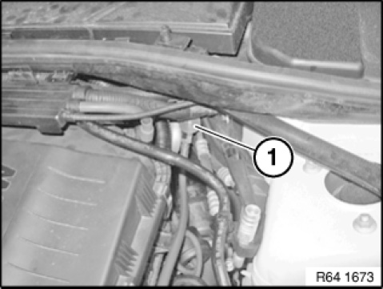
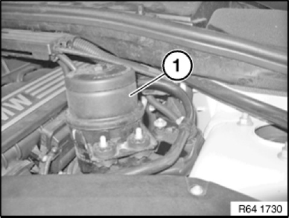
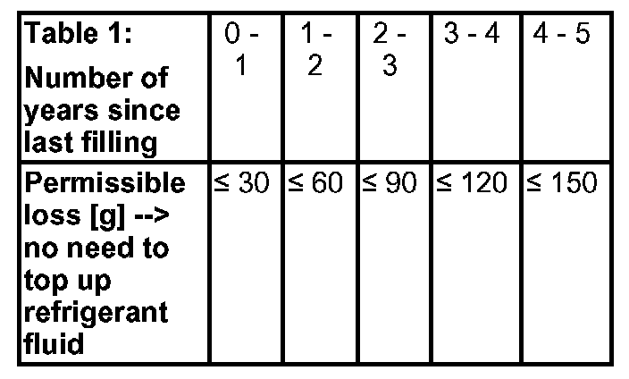
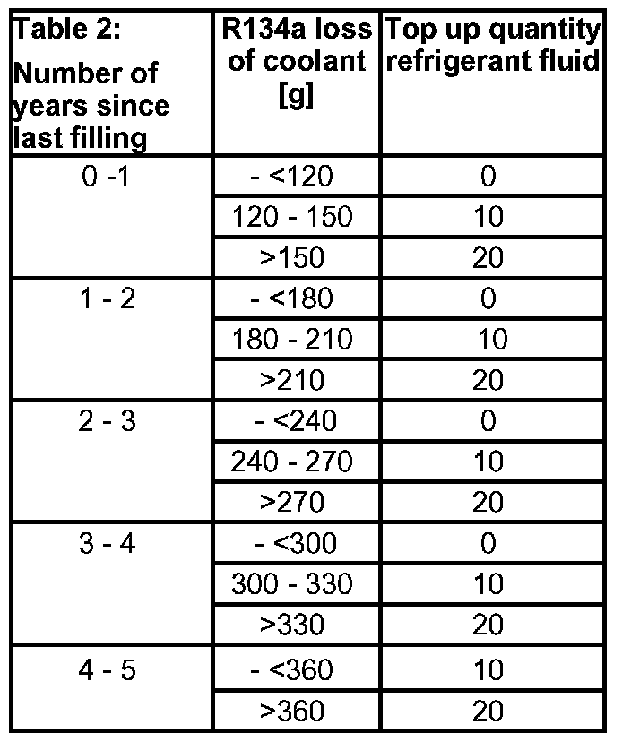
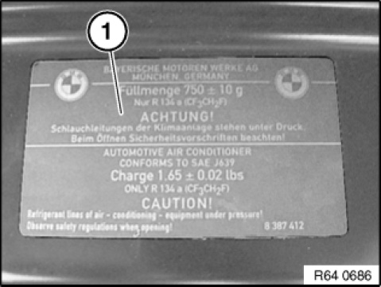

64 50 009 Drawing Off, Evacuating and Filling A/C System (R 134a)
64 50 009 Drawing Off, Evacuating And Filling Heating And Air Conditioning System (R134a)

IMPORTANT:
The suction-side filling line of the refrigerant circuit is omitted from the engine versions of model series E9x and E8x.
This is replaced by a direction connection on the expansion valve.
Changeover time frame:
- From 07/09 - N54
- From 08/09 - N43
- Until end of 2009-all other engine versions except N45/N46 and S65

Shown on N54 engine by way of example.
Direct connection of filling adapter (1) on the expansion valve is shown.
NOTE:Make sure filler connection line (1) is laid without kinks.

NOTE:
N52 engine only:
On vehicles with hydraulic steering (e.g. AFS) oil reservoir (1) must be detached.
Refer to: Remove oil reservoir for hydraulic steering

WARNING:
Only persons in possession of a professional certificate of competence for the maintenance and repair of heating and air conditioning systems are authorized to carry out repair work on the refrigerant circuit. This certificate must be presented by 04/07/2010 at the latest, (applies only to EU countries; follow country-specific regulations in non-EU countries)
Refrigerant circuit is under high pressure.
- If the protective caps on the filling valves are difficult to open, there is a danger of injury from leaking valve inserts.
Repair work may only be carried out on a depressurized refrigerant circuit.
- Before conducting repairs, check the actual pressure drop on the pressure gauge of the A/C service station.
Avoid contact with refrigerant and refrigerant fluid.
- Follow safety information for handling refrigerant tetrafluorethane R 134a.
- Follow safety information for handling refrigerant fluid.

IMPORTANT:
Risk of damage.
Only BMW-approved tetraflourethane R134a refrigerant may be used: (see sourcing reference: operating fluids)
Restart engine only when A/C system has been correctly filled.
Risk of damage.
Note SI 08 07 10 (669).
Carefully move the climate service station.
Comply with the operating instructions and maintenance intervals for the service station.
The climate service station contains highly sensitive components, such as scales. These components will be damaged due to improper handling, such as fast driving over a bump. This will result in a significant reduction of the measuring accuracy when drawing off and filling.
The vehicle must be parked on the ground during all draw-off, evacuation and filling procedures.
Filling a raised vehicle will result in insufficient filling levels.

NOTE:
In case of complaints, carry out a heating and air conditioning performance test.
If the system fails the test, draw off, evacuate and fill the heating and air conditioning system in accordance with the operating instructions of the relevant service station.
It is essential to adhere to the service station service intervals.
E60 only:
If necessary, to connect service station, use manufacturer's adapter for high-pressure connection (red).
Instructions for drawing off air conditioning: To help separation of refrigerant and refrigerant fluid, run engine at low speed (800-1200 rpm) and with heating and air conditioning system turned on for a few minutes.
The limits the entrainment of refrigerant fluid while it is drawn off.
Drawn-off refrigerant fluid must be changed and reintroduced via the service station.

Recycling:
Dispose of drawn-off refrigerant fluid as hazardous waste.
Observe country-specific waste disposal regulations.
IMPORTANT:
E72 only:
Vehicle must be evacuated from both sides.
Instructions for evacuating off air conditioning: Before each filling, evacuate the refrigerant system.
Observe an evacuation time of at least 30 minutes.
The evacuation procedure removes all traces of ambient air, water vapour and any other gases present from the heating and air conditioning system. This enables subsequent system filling with refrigerant.
If the vacuum does not remain stable when the system is off, run the procedure for leaks in the refrigerant circuit.
Notes for filling heating and air conditioning system:
Before filling with refrigerant, replace the refrigerant fluid entrained during drawing off.
Also top up any lost fluid as indicated in the table:
Loss of R134a refrigerant
Table 1 indicates the permitted loss of refrigerant after a specific period of time. There is no leak. Refrigerant fluid may not be topped up.
Table 2 indicates the amount of refrigerant fluid must be topped up with an unapproved loss of refrigerant due to a leak after a specific period of time.
Different cases:
a. Loss of refrigerant per Table 1 is not exceeded
- Top up lost R134a refrigerant
- It is not permitted to top up the refrigerant fluid
b. Loss of refrigerant per Table 1 is exceeded
- Top up lost R134a refrigerant
- Refrigerant fluid must be topped up additionally per Table 2



Follow notes for opening and replacing parts in refrigerant circuit.
Depending on the type of component replaced on the heating and air conditioning system, it may be necessary to top up the refrigerant fluid, even if no measurable losses have occurred during drawing off. Follow the notes provided by the heating and air conditioning system manufacturer, taking account of the tolerances (and inaccuracies) indicated in the operating instructions of the relevant service station.
Information on the required refrigerant capacity for the entire heating and air conditioning system is contained on the type plate (1) in the engine compartment.
If necessary, refer to Technical Data for capacities.
Installation note:
Reseal refrigerant filler necks on vehicle with sealing caps.